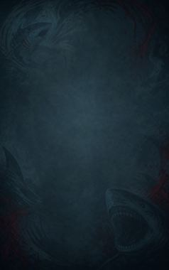
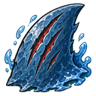
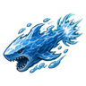
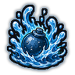
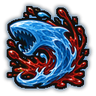
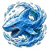
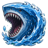

Technique trees › Clans and bloodlines
Hoshigaki clan
8 techniques in the Clan tab.
Needs the Hoshigaki gene.

Samehada: Shark Skin C
Chakra 15. Toughen the skin into rasping shark hide for an hour: tougher, and every blow bites deeper.
Samehada: Shark Skin C
Chakra 15. Toughen the skin into rasping shark hide for an hour: tougher, and every blow bites deeper.
Toughen the skin into rasping shark hide for an hour: tougher, and every blow bites deeper.
| Rank | Chakra | Cooldown | Class level |
|---|---|---|---|
| C | 15 | 2 hours | 3 |

Suikōdan: Water Shark Bullet CBA
Chakra 25 to 60. Fire a shark of water that bursts on impact. Hammerhead Missile and Great White Shark are bigger.
Suikōdan: Water Shark Bullet CBA
Chakra 25 to 60. Fire a shark of water that bursts on impact. Hammerhead Missile and Great White Shark are bigger.
Fire a shark of water that bursts on impact. Hammerhead Missile and Great White Shark are bigger.
| Rank | Chakra | Cooldown | Class level |
|---|---|---|---|
| C | 25 | 15 s | 4 |
| B | 40 | 25 s | 10 |
| A | 60 | 1 hour | 15 |

Suiton: Bakurai: Depth Charge C
Chakra 25. Hurl a heavy charge of water that bursts over a small area.
Suiton: Bakurai: Depth Charge C
Chakra 25. Hurl a heavy charge of water that bursts over a small area.
Hurl a heavy charge of water that bursts over a small area.
| Rank | Chakra | Cooldown | Class level |
|---|---|---|---|
| C | 25 | 20 s | 5 |
Samekabe: Shark Wall C
Chakra 30. A circling wall of water sharks around a spot blocks enemy shots for twenty seconds.
Samekabe: Shark Wall C
Chakra 30. A circling wall of water sharks around a spot blocks enemy shots for twenty seconds.
A circling wall of water sharks around a spot blocks enemy shots for twenty seconds.
| Rank | Chakra | Cooldown | Class level |
|---|---|---|---|
| C | 30 | 1.2 hours | 7 |

Chi Kaori: Blood Scent C
Chakra 20. Smell blood in the water: lock onto a wounded foe and bite hard.
Chi Kaori: Blood Scent C
Chakra 20. Smell blood in the water: lock onto a wounded foe and bite hard.
Smell blood in the water: lock onto a wounded foe and bite hard.
| Rank | Chakra | Cooldown | Class level |
|---|---|---|---|
| C | 20 | 15 s | 6 |
Suiton: Satsugai Naiō: Killing Depths A
Chakra 60. Flood an area with crushing deep water for six seconds.
Suiton: Satsugai Naiō: Killing Depths A
Chakra 60. Flood an area with crushing deep water for six seconds.
Flood an area with crushing deep water for six seconds.
| Rank | Chakra | Cooldown | Class level |
|---|---|---|---|
| A | 60 | 2.4 hours | 14 |

Same Kyōran: Shark Frenzy S
Chakra 70. S-rank: give in to the shark. One minute of savage strength, speed and bloodthirst.
Same Kyōran: Shark Frenzy S
Chakra 70. S-rank: give in to the shark. One minute of savage strength, speed and bloodthirst.
S-rank: give in to the shark. One minute of savage strength, speed and bloodthirst.
| Rank | Chakra | Cooldown | Class level |
|---|---|---|---|
| S | 70 | 12 hours | 17 |

Suiton: Megamouth Shark S
Chakra 100. S-rank: a colossal shark of water sweeps through a wide arc, swallowing everything.
Suiton: Megamouth Shark S
Chakra 100. S-rank: a colossal shark of water sweeps through a wide arc, swallowing everything.
S-rank: a colossal shark of water sweeps through a wide arc, swallowing everything.
| Rank | Chakra | Cooldown | Class level |
|---|---|---|---|
| S | 100 | 6 hours | 19 |
Chakra is the technique's base cost, the number in its def. In play it is multiplied by the pawn's chakra energy usage multiplier, which traits (chakra artificer 90%, volatile conduit 110%), World of Naruto genes and jutsu enhancements change, so the technique window can show a slightly different number for each ninja. Cooldowns are in-game time, as the technique window shows them, and the pawn's cooldown stat shortens or lengthens them. World of Naruto gives every ninja a base of 100 maximum chakra; genes and traits change it.